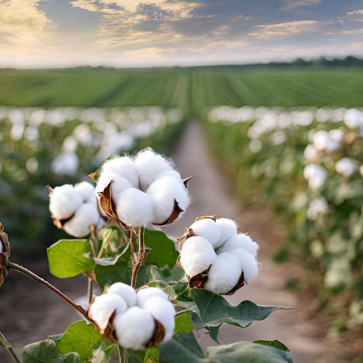
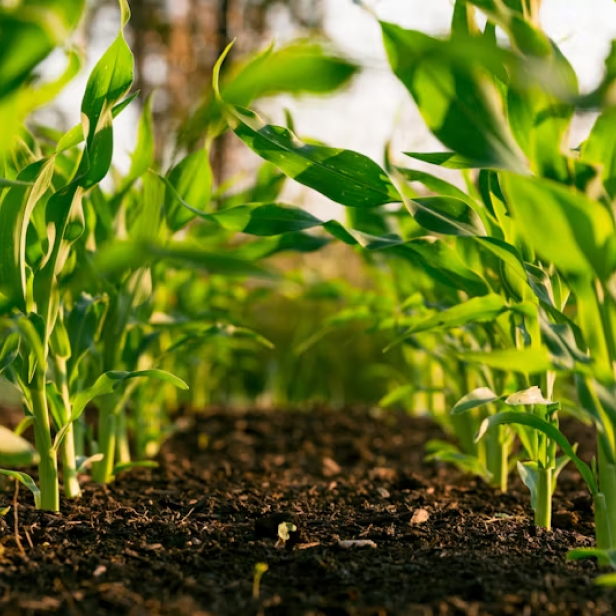
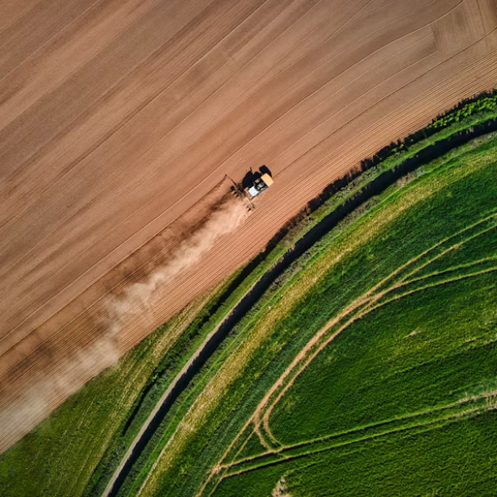
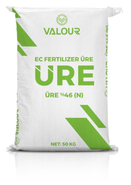

Hoş geldiniz! Biz Valour Gübre, merkezi İstanbul’da bulunan uluslararası gübre ticareti şirketiyiz. Kaliteli ürün ve servisi ilke edinerek temel, karmaşık, özel gübreleri ve hammaddeleri dünya çapındaki müşterilerimize tedarik ediyoruz. Sürdürülebilir tarımın gücüne inanan uzman ekibimiz ile tarımın geleceğini şekillendirmek ve dünyamızı daha yeşil bir yer haline getirmek amacıyla tutkuyla çalışıyoruz.

Tarımda verimlilik
Valour Gübre, toprak sağlığını koruyarak bitkilerin beslenmesini destekleyen önemli bir tarım aracıdır. Doğru gübreleme yöntemleri kullanarak toprağın besin değerini artırır ve bitkilerin daha sağlıklı büyümesini sağlar. Valour Gübre sayesinde tarım alanlarında verimliliğin artmasıyla daha kaliteli ürünler elde edilir ve sürdürülebilir tarım uygulamaları desteklenir.

Bereketli topraklar
Valour Gübre, tarımda verimliliği artırarak çiftçilerin daha kaliteli ürünler elde etmelerine yardımcı oluyor. Çiftçilerin tarımsal faaliyetlerinde başarılı olmalarını destekleyen Valour Gübre, sürdürülebilir tarım uygulamalarının benimsenmesine katkı sağlıyor.

Sürdürülebilir tarım
Valour Gübre, sürdürülebilir tarımı teşvik ederek doğal kaynakların verimli kullanımını sağlar ve toprak sağlığını korur. Çevre dostu tarım uygulamalarıyla gelecek nesillere daha verimli tarım alanları bırakmayı hedefler. Valour Gübre, ekonomik, çevresel ve sosyal açıdan dengeli bir tarım modeli sunarak sürdürülebilir tarımsal üretimi destekler.
Valour Gübre Ürünler
Pril ve granül yapılı, beyaz renkli, suda kolay ve bolca eriyebilen üre, azotlu gübreler içinde azot mikta-
rı en yüksek olanıdır. 15-15-15+(25 SO3) KOMPOZE GÜBRE

15-15-15+(25 SO3) KOMPOZE GÜBRE
20.20.0 kompoze gübresi, tüm dünyada bu tür gübreler içinde en fazla kullanılanıdır. İçeriğindeki azot ve fosfor dengeli olduğu için, taban (toprak altı) gübrelemesi sırasında uygulanan granüller toprak suyu ile çözündüğünde (eridiğinde) serbest hale gelen her iki besin de bitki kökleri tarafından kolaylıkla alınabilir. Yapısındaki fosforun tamamı bitkilerin alabileceği formdadır.
20.20.0 KOMPOZE GÜBRE
DAP (Diamonyum Fosfat) içeriğinde %18 azot (N) ve fosfor pentaoksit (P2O5) olarak %46 fosfor bulunduran iki besinli bir gübredir. İçerdiği azot,amonyum(NH4+) formunda olduğundan bitkilerin özellikle ilk geli- şim dönemlerinde oldukça etkilidir. Bünyesindeki azot miktarı genellikle, taban (toprakaltı) gübresi olarak kullanıldığında bitkinin ihtiyacının tamamını karşılamaya yetmez. Bu nedenle, taban gübresi olarak tercih edilmesi durumunda, üst gübreleme sırasında diğer azotlu gübrelerle bu eksikliğin giderilmesi gerekir. Azotu amonyum (NH4+) formunda olup, kolayca toprakta tutunacağından, aşırı yağış veya sulama sonucunda yıkanma ile kayıpları çok düşük olur.
18.46.0 DAP (DİAMONYUM FOSFAT)
Amonyum sülfat gübresi, %21 oranında amonyum azotu ile %24.2 oranında kükürt içeren fi zyolojik asit bir gübredir. Dış görünüşü ile kristal şekere benzediği için çiftçiler arasında ‘Şeker Gübre’ olarak da bilinir.
Granül amonyum sülfat ise %20,5 oranında amonyum azotu ve kükürt ihtiva eder. Dış görünüşü granül yapı- dadır.
Bünyelerindeki azot amonyum formunda olduğundan topraktan yıkanarak kaybolmaz ve uzun süre etkilidir. Bünyelerinde bulunan sülfat formundaki kükürt, bitkilerin ihtiyacını tamamen karşılayacak durumdadır. Toprakta eridiğinde ortamı asitleştireceğinden kireçli-yüksek pH’lı topraklarda mikro besin elementlerinin alınımını artırır.
GRANÜL AMONYUM SÜLFAT
Yapısında %26 azot (N) bulunan kalsiyum amonyum nitrat (CAN), çeltik dışındaki kültür bitkilerin üst gübrelemesinde en çok kullanılan besin kaynaklarından biridir. Yapısındaki azotun yarısı amonyum azotu (NH4-N), diğer yarısı ise nitrat azotu (NO3-N) formundadır. Nitrat azotu, bitkilerin hızlı gelişim ve ürüne yatma dönemlerinde bitki kökleri tarafından hızlı bir şekilde alınırken, toprak şartlarına bağlı olarak, amon- yum formundaki azotun büyük bir kısmı ise topraktaki azot bakterileri tarafından nitrat azotuna dönüştü- rülür. Bu sayede bitkiler azot ihtiyaçlarınırahatlıklakarşılarlar.Çeltikdışındaki kültür bitkilerinin tamamının gelişme önemleri içinde aldığı toplam azotun %75’i nitrat azotu formundadır. Bu nedenle, ülkemizde ve dünyada, üst gübre olarak en çok kullanılan azotlu gübrelerin başında gelir.